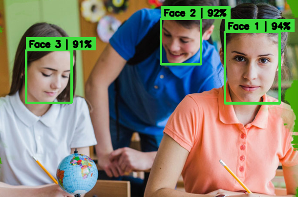

📌 این پروژه چیست؟
یک برنامهٔ دسکتاپ کامل که با یادگیری عمیق، چهرهها را از وبکم زنده تشخیص داده و هویت هر فرد را شناسایی میکند — فراتر از یک نمونهٔ آموزشی: ثبتنام افراد، اثرانگشت دیجیتل چهره، ورود با چهره و حضور و غیاب خودکار.
🧩 مسیر پردازش
Webcam
تصویر زنده
تصویر زنده
→
YuNet
تشخیص چهره
تشخیص چهره
→
SFace
اثرانگشت ۱۲۸بُعدی
اثرانگشت ۱۲۸بُعدی
→
Cosine
تطبیق هویت
تطبیق هویت
→
SQLite
افراد + حضور خودکار
افراد + حضور خودکار
128
بُعد بردار اثرانگشت
99.5%
دقت SFace روی معیار LFW
<20s
زمان ثبتنام هر فرد
100%
آفلاین — بدون اینترنت
✨ امکانات قابل نمایش
- رابط گرافیکی حرفهای با رعایت اصول HCI — داشبورد، میانبرها، نوار وضعیت زنده
- اسکن چهره چند زاویهای الهامگرفته از Face ID (۷ ناحیهٔ زاویهای + کنترل کیفیت خودکار)
- دیتابیس SQLite داخلی — افراد، چهرهها و حضور همیشه ذخیرهاند
- شناسایی زنده همزمان چند نفر؛ نام + درصد اطمینان روی تصویر
- فرد ناشناس؟ کادر قرمز + برچسب Unknown — سیستم فقط افراد ثبتشده را میشناسد
- حضور و غیاب خودکار در دیتابیس + خروجی CSV برای Excel
- بررسی سلامت پروژه با یک کلیک (مدلها، دیتابیس، تشخیص)
🎯 چرا این پروژه مهم است؟
- کاربرد واقعی در امنیت، حضور و غیاب و دسترسی هوشمند
- کاملاً محلی: چهرهها هرگز از لپتاپ خارج نمیشوند
- پوشش همزمان دو زمینهٔ فراخوان: AI و بینایی ماشین + نرمافزار کاربردی

⚙️ اجرا در ۳ دستور
pip install -r requirements.txt
python src/download_models.py
python src/gui.py
python src/download_models.py
python src/gui.py
Python 3.12 | CustomTkinter | OpenCV 4.13 | YuNet + SFace | SQLite — بدون GPU